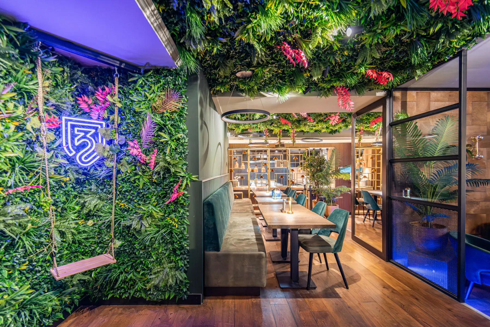
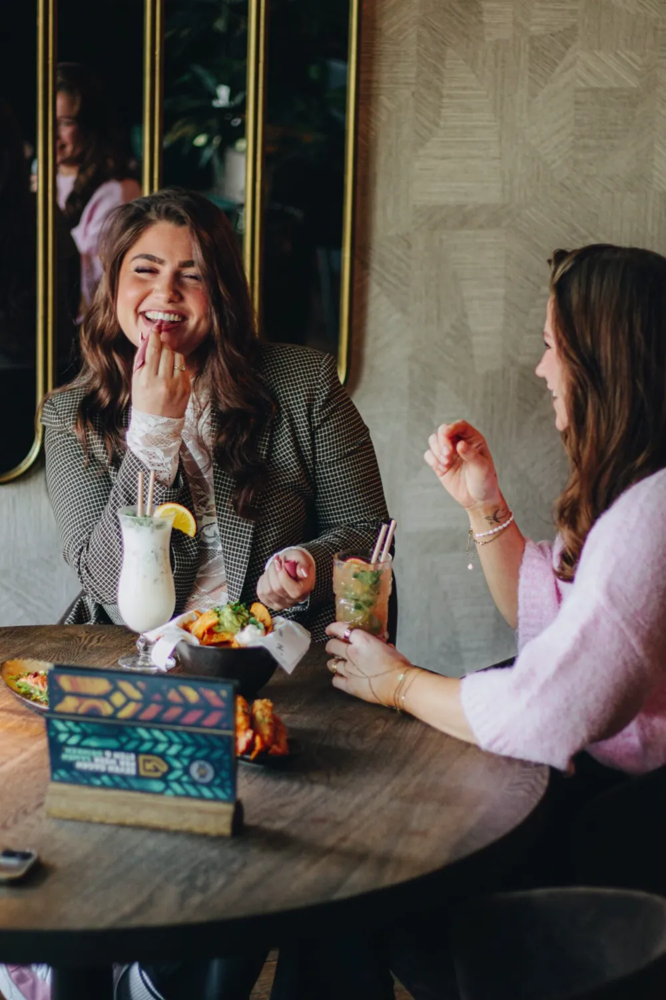
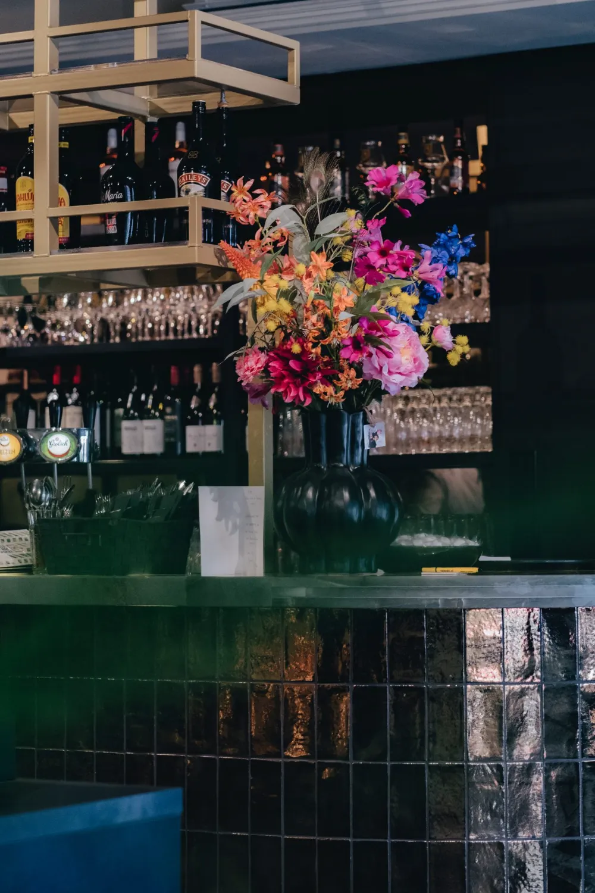
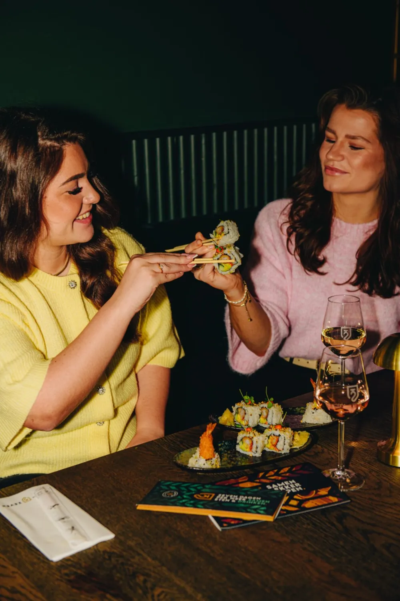
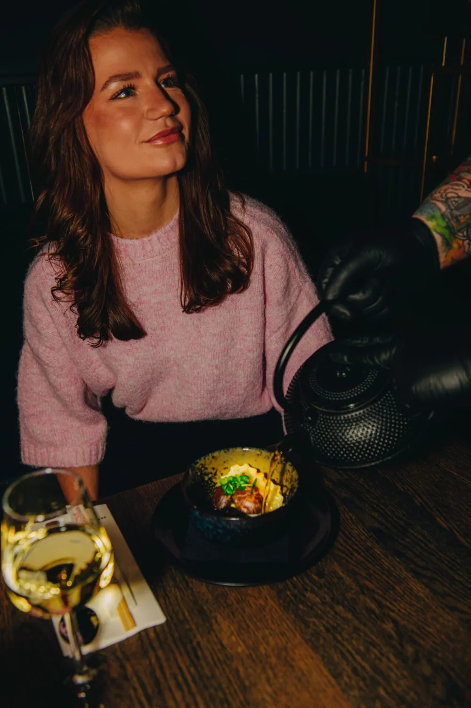

High wine
€ 28,95 per persoon
In drie rondes proef je jouw favoriete wijnen uit ons volledige assortiment open wijnen. Bij elke ronde serveren we perfect bijpassende hapjes.

Zeven dagen per week samen eten en drinken
De hotspot van de Zevenaarse binnenstad. Van 's morgens tot 's avonds laat: koffie met gebak, lunch, diner of een gezellige borrel.
Zeven is de hotspot van de Zevenaarse binnenstad. Je kan van 's morgens tot 's avonds laat binnenlopen voor een kop heerlijke koffie met gebak, lunch, diner of een gezellige borrel. Bij mooi weer hebben wij recht voor de deur een groot, overdekt terras waar je kunt koffieleuten en terras-tijgeren. Zowel zakelijk als privé, helemaal alleen, met z'n tweetjes of in grotere groepen.
Zeven heeft een nieuw en sfeervol interieur dat ruim is opgezet. Met knusse hoekjes en bankjes zorgen voor een huiskamer waar heel Zevenaar zich thuis voelt. Een plek waar je op ieder moment van de dag kunt genieten van echte gastvrijheid.


Vrijdag 25 en zaterdag 26 december
Schuif deze kerst gezellig bij ons aan en geniet van een feestelijk driegangendiner vol winterse smaken. Samen met familie of vrienden maken we er een warme en smaakvolle avond van!
Geef bij je reservering even aan of er kinderen meekomen.
Reserveer je kerstdinerVier een speciale gelegenheid met onze bijzondere high tea of high cocktail, high wine of high beer! Met heerlijke gerechten en drankjes maakt Zeven van iedere gelegenheid een onvergetelijke herinnering.
€ 28,95 per persoon
In drie rondes proef je jouw favoriete wijnen uit ons volledige assortiment open wijnen. Bij elke ronde serveren we perfect bijpassende hapjes.
€ 39,95 per persoon
In drie rondes kies je telkens uit twee cocktails, met bijpassende bites. Alcoholvrij kan ook.
Bites: breekbrood met huisgemaakte kruidenboter en aioli, oude kaasblokjes met Coppa di Parma en nacho's, yoghurt espuma met chocolade.
Zet je wensen op de mail, dan nemen wij daarna zo snel mogelijk contact met je op. Meer weten of direct een offerte aanvragen? Bel ons op 0316 - 525722 of mail naar info@grandcafezeven.nl.
Met een groter gezelschap? Neem contact met ons op, we denken graag met je mee.

Cadeautip! Met een cadeaukaart van Zeven zit je altijd goed.
Goed beoordeeld, gebaseerd op 404 Google-recensies.
Vriendelijk. Geen vervelend wachttijd. En, een heerlijke plek om te zitten
Wirklich nette Location! Essen war lecker!
Gezellige nette tent.
| Maandag | 10:00 - 18:00 |
|---|---|
| Dinsdag | 10:00 - 23:00 |
| Woensdag | 10:00 - 23:00 |
| Donderdag | 10:00 - 23:00 |
| Vrijdag | 10:00 - 01:00 |
| Zaterdag | 10:00 - 01:00 |
| Zondag | 11:00 - 23:00 |
Lunchen maandag t/m zondag 11:30 - 15:30
Dineren dinsdag t/m zondag 17:00 - 21:00

+31 316 525 722
info@grandcafezeven.nl
Reserveren kan telefonisch of per e-mail.